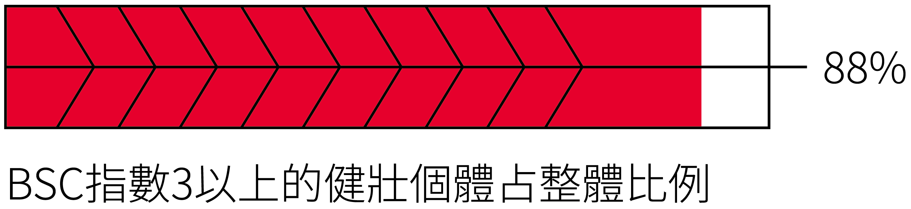

窗殺所出現的生態環境：反淘汰

BCS 3以下（胸肌消瘦）的比率高達85%，顯示被窗殺的鳥類多數是健康個體。

胸肌指數 1、2
送到救傷中心的鳥，多為 BCS 1-2 分的瘦弱鳥。這並非因為牠們「命大」，而是因為體力差、飛得慢，撞擊力道較輕，才僥僥倖存。
健康警訊
該鳥可能長期營養不良、生病或寄生蟲感染。

胸肌指數 3
肌肉與龍骨突齊平，觸摸時平坦。代表營養狀況良好。

胸肌指數 4、5
肌肉飽滿突出，呈現 U 字型或圓弧狀。代表營養極佳。